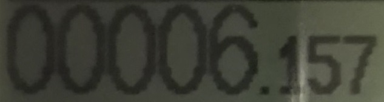

chrome.exe --disable-web-security
<link rel="stylesheet" href="src/cropper.css">

<html>
<head>
    <meta charset="utf-8">
    <meta name="viewport" content="initial-scale=1, maximum-scale=1, user-scalable=no, width=device-width">

<link rel="stylesheet" type="http://jcrop-cdn.tapmodo.com/v0.9.12/css/jquery.Jcrop.min.css" href="theme.css">

    <style type="text/css">
        div img{
            max-width: 800px; // achtung, dynamisch!!!!!!
            max-height: 800px;
        }
        input {
            width: 400px;
            float: left;
        }
    </style>

    <title>Side Menus</title>
  <script src="http://ajax.googleapis.com/ajax/libs/jquery/1.11.1/jquery.min.js"></script>
  <script src = "http://jcrop-cdn.tapmodo.com/v0.9.12/js/jquery.Jcrop.min.js"></script>
</head>
<!--ACHTUNG BEI CHROME IST CORS-ORIGIN AUSGESTELLT!!!!!!-->
<!--  src="http://www.extremetech.com/wp-content/uploads/2012/12/Audi-A1.jpg" -->

<body onload="onLoad()">
   <h1>hello picture</h1>
   </img>
   <div>
    
    </div>
    <button id="crop">Crop</button>
    <input type="text" id="x"  name="coord_x" />
    <input type="text" id="y"  name="coord_y" />
    <input type="text" id="x2" name="coord_x2"/>
    <input type="text" id="y2" name="coord_y2"/>
    <input type="text" id="w"  name="size_w"/>
    <input type="text" id="h"  name="size_h"/>
    <canvas id="canvasThumbResult"></canvas>
    </body>
<script>

var width;
var height;
  function onLoad(){
    width=document.getElementById("canvasToThumb").width;
    console.log("width" + width);
    height=document.getElementById("canvasToThumb").height;
    console.log("height" + height);
    var canvas = document.getElementsByTagName('canvasThumbResult');
    canvas.width  = width;
    canvas.height = height;
// set canvas to size..

  }

  // Create variables (in this scope) to hold the API and image size
  var jcrop_api, boundx, boundy;

  function updatePreview(c) { // croping image preview
      if (parseInt(c.w) > 0) {
          var rx = 220 / c.w, ry = 220 / c.h;
      }
  }

  // todo mb. über variablen und nicht html tag!!
  function showCoords(c) { // show all coords
      $('#x').val(c.x);
      $('#y').val(c.y);
      $('#x2').val(c.x2);
      $('#y2').val(c.y2);
      $('#w').val(c.w);
      $('#h').val(c.h);
  }

// hint mb: hier kann über spect ration das crop rechteck beeinfluust werden 4/1 seitenverhältnisse
  $('.thumbnail-img').Jcrop({
      onChange: updatePreview,
      onSelect: showCoords,
      bgFade: true,
      bgOpacity: .2,
      setSelect: [ 0, 0, 220, 220 ],
      aspectRatio: 4/1
  },function(){
      jcrop_api = this;
  });

  function logger(name, variable){
    console.log(name + "  " + variable);
  }

  $("#crop").on("click", function(){
      var canvas = document.getElementById("canvasThumbResult");
      logger("canvas.width" ,canvas.width);
      logger("canvas.height" ,canvas.height);
      var context = canvas.getContext("2d");
      var img = document.getElementById("canvasToThumb"),
          $img = $(img),
          imgW = img.width,
          imgH = img.height;
          logger("img.width" ,img.width);
          logger("img.height" ,img.height);

      var ratioY = imgH / $img.height(),
          ratioX = imgW / $img.width();

      var getX = $('#x').val() * ratioX,
          getY = $('#y').val() * ratioY,
          getWidth = $('#w').val() * ratioX,
          getHeight = $('#h').val() * ratioY;
          logger("getX" ,getX);
          logger("getY" ,getY);
          logger("getWidth" ,getWidth);
          logger("getHeight" ,getHeight);

      // set canvas to correct size
      canvas.width=getWidth
      canvas.height=getHeight;
      logger("canvas.width" ,canvas.width);
      logger("canvas.height" ,canvas.height);
      context.drawImage(img,getX,getY,getWidth,getHeight,0,0,canvas.width,canvas.height);
  });
</script>
